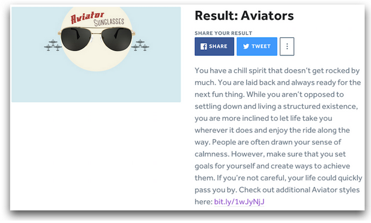

-
Combine Video and Quizzes for the Best Content Marketing Around
As content marketers we are drowning people in a sea of trite and lazy content. If we can’t figure out how to start making better content fast, we all risk losing our audiences. That’s the problem that interactive content aims to solve.
On Thursday, March 19, at 1:30am ET we are going to talk about two types of interactive content, videos and quizzes, and how these two can be combined. You can register for it here.
What is interactive content?
Interactive content, as defined by ion Interactive CTO Scott Brinker, “has a participatory element to it — it’s not just passively consumed, but engages the audience in an activity.”
It’s not just watching a video – it’s being able to interact with it by clicking on tags containing more information. For instance, a Google Maps tag could appear containing a map of the filming location. Or, it could be an Amazon tag that gives viewers the option to buy a book about the same topic.
Quizzes are another hot form of interactive content. Publishers and marketers are using them in content to engage their audience and learn more about who they are. You can learn about their preferences, dislikes, and interests based on the way they answer questions on trivia or personality quizzes.
The fundamental element of interactive content is that it requires action on the part of the consumer. By the time he or she gets through a piece of interactive content, they will have actively engaged with the content and had more time spent than traditional passive content.
The power of interactive videos
Marketers spend hours coming up with perfect call-to-action buttons. They constantly adjust the text, size, color, and placement in an effort to boost conversions.
Let’s assume that your video is dynamite. It’s compelling, visually appealing, and people are clicking on that beautiful play button. What else can you do to add value to the viewing experience?
Interactive videos give you the option to add clickable hotspots such as text, images, video, music, and maps. They appear at various points during the video to coincide with timely content and topics happening on screen. When people interact with hotspots, they can view the embeddable content while the video pauses in the background.
As an example, check out the below video by Doctors Without Borders. They created an interactive video tour of one of their Ebola treatment centers. The video is annotated at various points with Google maps, YouTube videos, images, text, and links.

At the 13 second mark, a clickable magnifying glass flashes onto the screen. It is accompanied by the text, “What’s inside the Ebola Treatment Centre?”

When you click on it, it opens up an annotated floor plan of the Ebola Treatment Centre. There are 20 icons on the image, and when you hover over each icon, a picture or text will appear with a detailed description of each section of the building.

So in 13 seconds, we just went from watching a video about the Ebola Treatment Centre to viewing its floor plan with beautiful, easy-to-use annotations. The makers of the video came up with a creative way to continue adding value after the viewer hit “play.”
Conclusion: As more and more people jump into the video marketing world, the novelty of merely having videos will wear off. It will get increasingly difficult to stand out in a crowded field, and so adding an element of interactivity to videos can be a game changer.
The power of quizzes
People love to find out interesting things about themselves, and quizzes are a perfect medium for feeding this craving. Whether it’s a trivia quiz about something they think they’re experts on or a personality quiz aiming to tell them which Walking Dead character they are, people have a hard time passing up opportunities to take a peek at the metaphorical mirror.
Quizzes consistently top the list of the most shared pieces of content on the internet. In January, 9 of the 10 most-engaged stories on Facebook were quizzes. The combined number of shares for those nine quizzes was 10 million, and one quiz alone had over 1.9 million interactions.
And it’s not just that people are sharing and interacting with quizzes. In the process, they’re telling you all sorts of things about themselves that you would never be able find out with a static blog post. You can get insights into what topics they know or don’t know about, what preferences they have, and other personality traits.
Publishers and marketers have started to catch on to the viral magic of quizzes, and they are using them in a variety of ways to grow their brand and delight their audiences. Zenni Optical, for instance, created a quiz with the goal of matching people with their ideal set of frames. The quiz was beautifully designed, and it contained 9 questions about personality, style preferences, and facial structure. Based on their responses, they would get an end result that was one of Zenni’s frames.

People have responded to the quiz. It was quickly taken more than 100,000 times and is now over 370,000. And it served Zenni’s goal of matching people up with a pair of their frames – they were able to generate over $250,000 in revenue off of this one quiz.
Making it all work together
So we’ve talked about two types of interactive content: videos and quizzes. Can the two be combined?
Absolutely.
And that’s what we’ll be talking about in our webinar on Thursday, March 19, at 1:30am ET. It will be a joint webinar between ThingLink and Qzzr. The title of the webinar is, “Videos + Quizzes: A Match Made In Interactive Content Heaven.” Qzzr’s Owen Fuller and ThingLink’s Alicia Reich will be teaching how to fully take advantage of interactive videos and quizzes to drive increased engagement and revenue all while creating interactive content magic.
You can register for the webinar here.
-
Webinar: Why Quizzes Are Content Marketing’s Secret Weapon
-
I Can’t Stop Looking at These Logo Quizzes
I’m fascinated by designers. They have an ability to create something beautiful based on vague instructions such as, “make us a logo that conveys persistence and excellence—and make it blue.”
-
Don’t Just Make a Quiz… Promote it on Facebook!
When it comes to promoting your quizzes, Facebook can be your best friend. It is great for targeting, finding super-fans of quiz topics, and growing your customer base.
We’ve experimented with a variety of Facebook ads to help share awesome quizzes with the world and the results continue to amaze us. Here’s a quick overview of how to get the best results when you make a quiz and promote it on Facebook (or even an old quiz that you’d like to revive via Facebook).
Step 1: Nail the initial post

Start by getting the link to a quiz. Ideally, that link will be for a page from your own website that has the quiz embedded on it, but you can also use the Qzzr.com link if you don’t have it embedded anywhere.
Then, post that link to a Facebook post and make sure there is a published image. You can change the image by clicking on the change image button via Facebook but make sure it’s a clear description of what the quiz is and why it’s great.
Keep in mind that your Facebook post is just like any other advertisement or marketing message you’ve ever worked with; it needs to be engaging, stand out, and have a call to action to really make it count.
Step 2: Boost your post through Ads Manager
Once you’ve posted an update on Facebook, you’ll see the option to Boost your posts. This is a great way to improve engagement with any post and allows you very basic targeting options like posting to your fans, to a targeted group based on interests and set a budget.
For now let’s focus on doing this through the Ads Manager aspect of Facebook. That’s how you get your quiz in front of everyone and get the engagement your quiz deserves.
Once you’ve clicked on Create Ad in your Facebook ads manager you are given a number of advertising options. We recommend you focus on ‘Boost your posts’ which allows you to get engagement on your Facebook page AND your quiz. Win win.

You’ll then be given the option to choose which Facebook page (if you manage multiple pages) and which post you’d like to boost.

Next you are given the option to name your Campaign which is the highest level organizer in Facebook for your ads. A good option here is to replace the name that Facebook gives your campaign with the specific quiz you are working with. That way you can keep track on your Facebook boost success from the management page a lot more easily.
Step 3: Target like a pro
Once that’s done, you’ll be given all the targeting options (see below) which is where the magic happens. You can choose location targeting by country, region, state, city, etc. Or you can target by age, gender, language, interests, behaviors, and connections to your page or to fans of your page. This is also where you’ll be able to set a budget, timeframe for your promotion, and get an idea of the audience size you’ll be targeting. It can feel a little overwhelming at first, but remember, you can always just delete it. And you can’t screw anything up too badly from here, so take a deep breath and let’s go.

When you make a quiz, think about your quiz topic and think about your target customer/user. Facebook allows for so many targeting options that it’s important you remember both of these groups while setting up your targeting. The first thing is Locations. You can go as broad as a country or as specific as a city or zip code.
Next comes language. If you have an English quiz, you’ll want to call out English (ALL) in the language targeting options for Facebook. If your quiz is in any other language, simply pick that language in the targeting and you’re set. We haven’t done a lot of Age or Gender targeting unless the quiz or target customer really called for it, simply because the location and language allowed for a narrowed scope and there is a preference to let the quiz topic, title, and offer do the clarifying work.
Next comes Interests targeting which is where you can target Facebook users based on their interest in your quiz topic, offer, business, or anything else you can come up with. For example, if I’m selling a Breaking Bad character online and I’ve created a Breaking Bad quiz, I can target fans of Breaking Bad and Walter White. Here’s where you can do some exploring and potentially create a few different Ad Sets (the level under Campaigns) based on varying Interests targeting. In this section, you’ll also see potential audience size which is helpful for making sure you aren’t too narrowly focused.

Step 4: Set your budget
Another fantastic part to Facebook ads has been the small amount of money you can use to get started. Setting a daily budget or a Campaign budget allows any company of any size to try it. The recommendation here is to trust in Facebook’s ability to make the most of your marketing dollars by using the Pricing optimization option of ‘Get the most engagements..’. Facebook does a great job of getting you the most bang for your buck…usually.

Step 5: Pick the on-screen location where your quiz will show up on people’s feeds
Finally you get to pick where your quiz shows up. We’ve found great success by removing the Right Column ads for targeting, but everything is worth trying if you feel differently. Desktop News Feed and Mobile News Feed are the perfect place for your quiz to show up. This is where you can get an idea for what your ad will look like on Facebook (make sure your spelling is correct). Then click Publish Ad.
Conclusion
Most people know about quizzes because they’ve seen them on their own Facebook feeds. They consistently top the charts of the most shared pieces of content on Facebook, and it doesn’t appear to be slowing down any time soon.
In short, Facebook is an ideal starting point for promoting your quiz. And by using the tips laid out above, you can increase engagement at an extremely cheap price – we’ve seen rates as low as $0.01 per post engagement.
Having said that, the book is still being written. I’m always open to new ideas about promoting quizzes on Facebook, and here are a few more valuable resources if you’re looking to kick your Facebook marketing up a level:
http://www.jonloomer.com/
https://www.facebook.com/business/products/ads -
Use World Book Online to Create a Quiz on Virtually Any Subject
Want to create a quiz but not sure where to start? If you have a valid public library card, pull it out and head on over to WorldBookOnline.com. Here you’ll find a wealth of knowledge and plenty of facts and inspiration to get you started.
What is World Book Online? It’s the online version of the famous World Book Encyclopedia. World Book Incorporated was founded in 1915 with its first encyclopedia published in 1917. In the 100 years since, World Book has evolved. Today, it publishes both print and digital content.
Many public library systems subscribe to World Book Online. If yours does, you will be able to access the World Book Online website either via a link provided by your library or directly. Either way, you’ll need to enter your library card number in order to access the content. The World Book Online site currently has five World Book Products you can use as inspiration:
- Timelines
- Early World of Learning
- For Kids
- Info Finder
- Enciclopedia Estudiantil Hallazgos
To create a quiz, use Timelines, For Kids and Info Finder. They’re all fantastic resources!
Timelines – This one is broken into eight main categories: Arts, Literature, Notable People, Parts of the World, Science and Technology, Society and Culture, Sports, and World History. Start by clicking a category that interests you and then work your way through the various subcategories.
For example, under Notable People, you’ll be presented with more options such as Explorers, Inventors, and Notable Americans (among others). If you click Notable Americans, you’ll then be presented with a page full of notable Americans such as Mark Twain, George Washington, and John Glenn. After clicking a topic, you’ll then be presented with a timeline that displays key facts about that topic in chronological order.
This is a fantastic resource for factual quizzes based on events or people. For example, if your quiz is about John Glenn, you’ll find plenty of interesting information on his World Book Timeline. For instance, here’s a question you could use: How old was John Glenn on his last space flight? (Answer 77).
For Kids – Though designed for kids, this section is also loaded with interesting information. The information in the For Kids section is highly simplified, making it easy to quickly scan and digest. Topics in this section include: People, Sports and Hobbies, Places, Arts, World Religions, Science and Mathematics, Plants and Animals, and History and Government.
Depending on the topic, you may find additional subtopics. For example, under World Religions there are: Books, Buildings, Customs and Beliefs, Festivals and Holidays, Greek Mythology, People, and Roman Mythology.
By exploring various topics and subtopics in the For Kids section, not only might you find interesting facts for a factual quiz, you may find inspiration for other quizzes down the road. For example, did you know that Cupid, the god of love in Roman stories, is believed to be the son of the goddess Venus? How’s that for an unusual quiz question this Valentine’s Day?
Info Finder – Info Finder comes with its own Search bar, making it the go-to choice for finding information on virtually any topic. However, it’s more than just a search engine. Info Finder has several sections, each of which could be a launching spot for more research. These sections include: World Newspapers, Current Events, Interactive Earth, Science Projects, and Biography Center. It also has a featured science project and a featured biography. You can also search by: A-Z, subject, images and videos, or dictionary. Finally, you might want to check out one of the “virtual tours” offered on Info Finder.
Info Finder is an excellent choice when you know what you want to write about but aren’t quite sure of your facts. For example, if you know you want to write a quiz about volcanoes, go to Info Finder and enter Volcanoes in the search bar. Immediately you’ll be presented with results including general information about volcanoes as well as specific information about famous volcanoes around the world including Krakatau, Kilauea, and the mud volcanoes of Azerbaijan. Then, you will discover fascinating facts such as this one: scientists believe that the eruption of the Toba volcano about 74,000 years ago reduced Earth’s human population to just a few thousand.
If you want to create a factual quiz, you’ll need plenty of actual facts. World Book Online offers a wealth of knowledge and inspiration. Whether you know exactly what you want to create your quiz around or don’t have a clue, World Book’s Timelines, For Kids, or Info Finder will help you find the right facts to build a factual quiz on.